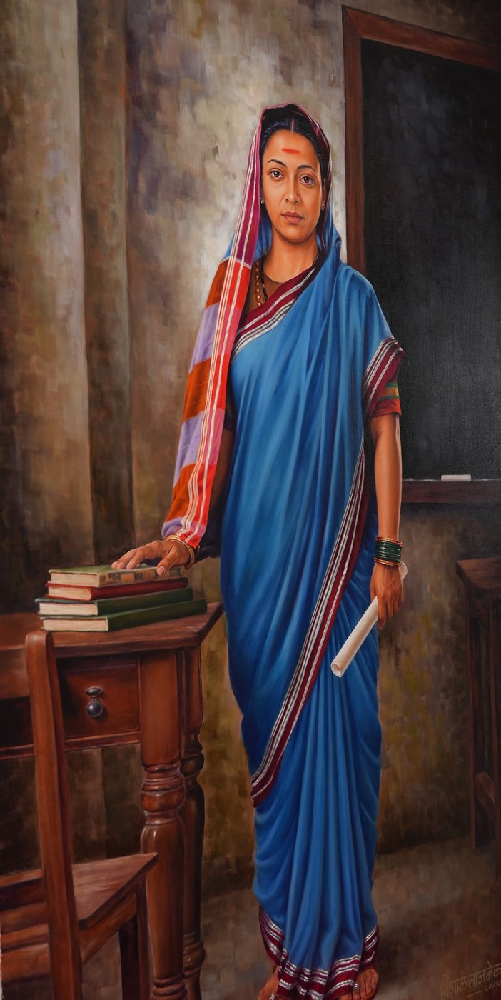
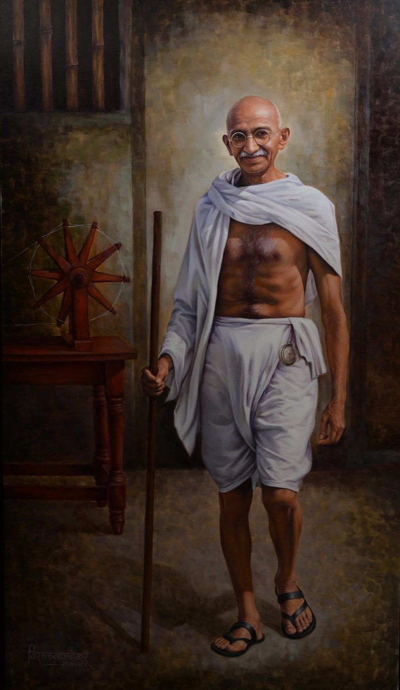
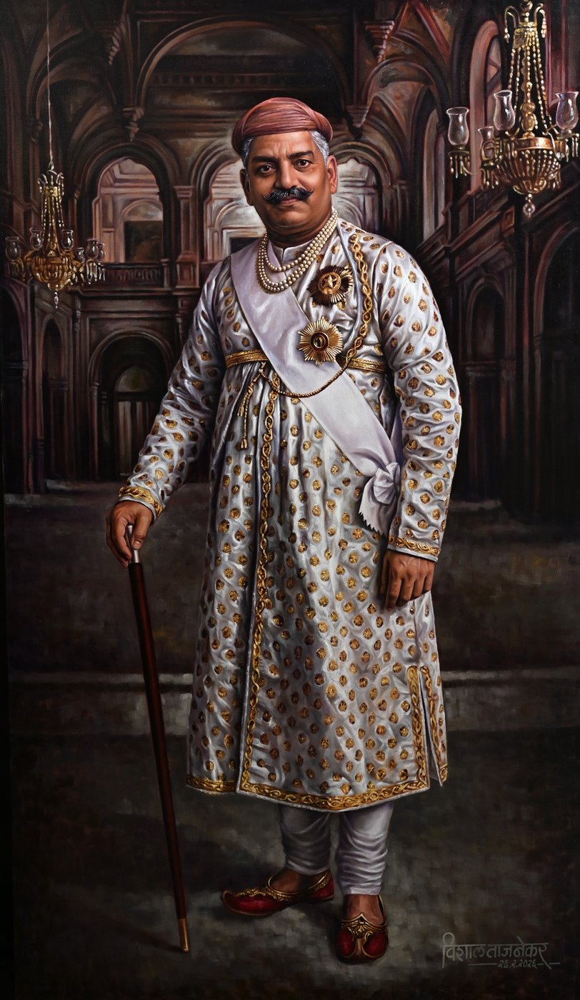
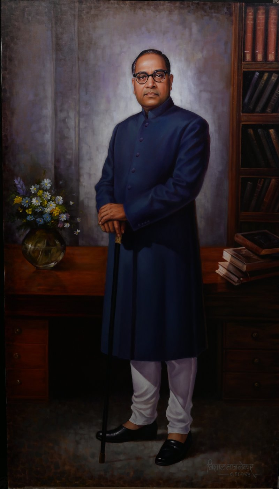
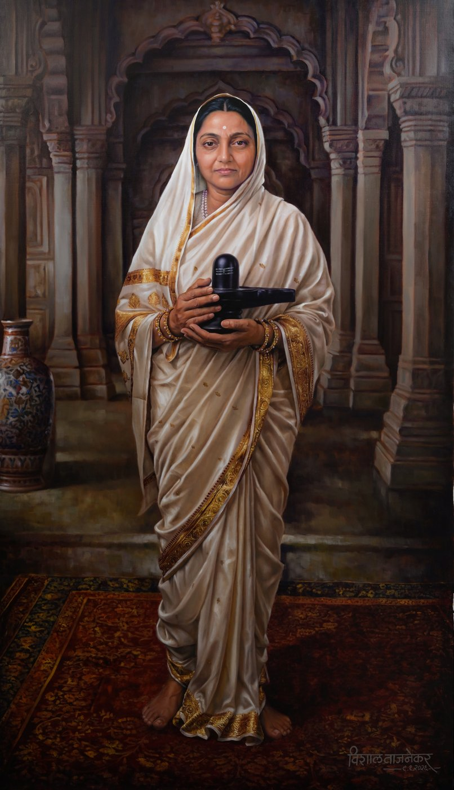
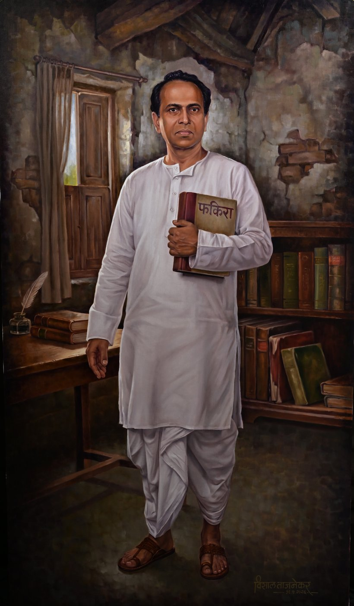
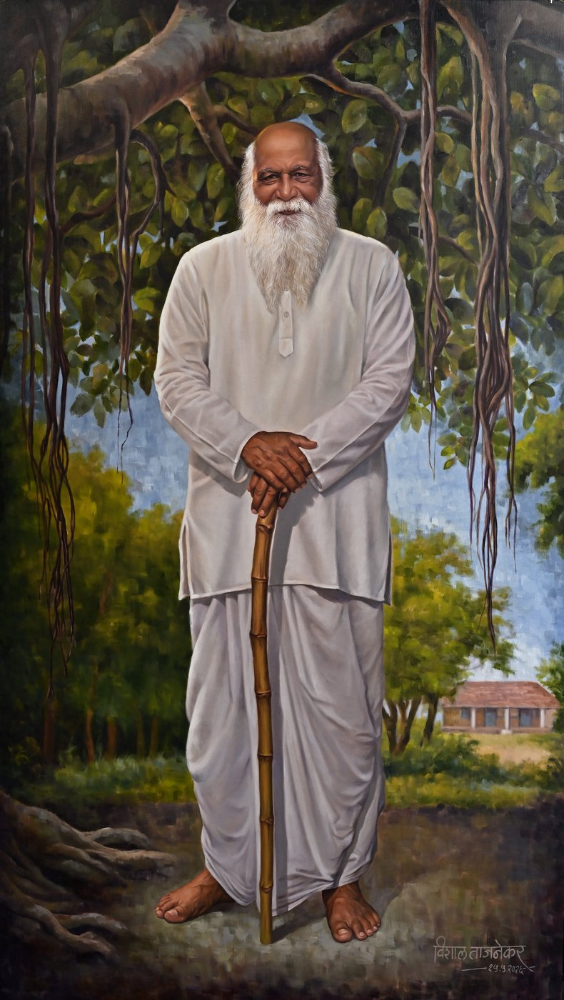

A meditation and reflection hall, rising within Nakshatra Garden.
Vidya Nagari Campus
Baramati, Maharashtra
A meditation and reflection hall, rising within Nakshatra Garden.
Vidya Nagari Campus
Baramati, Maharashtra
Prerna Sthal is a thoughtfully envisioned meditation and reflection space, located within Nakshatra Garden in the Vidya Nagari campus of Vidya Pratishthan, Baramati.
Surrounded by the tranquil landscape of Nakshatra Garden, the project is designed to promote inner peace, mindfulness, and spiritual well‑being through its harmonious integration of architecture, nature, and water elements.

In today's world of stress and conflict, Gautam Buddha remains a powerful symbol of peace — reminding us that inner calm and compassion are the foundations of a peaceful society.
A quiet, peaceful space away from the city's noise and stress — helping reduce anxiety and stress through regular meditation practice.
A sacred, neutral environment for people of all faiths, or none, to connect with themselves — encouraging self‑awareness and personal reflection.
A gathering space for those drawn to mindfulness and inner development — able to host group meditation, workshops, and discussion.
Meditation carries scientifically documented benefits — improved focus, better sleep, and steadier emotional regulation.
Guidance and resources for beginners and advanced practitioners alike, alongside the corridor's inspirational gallery.
In a fast‑paced urban environment, a meditation hall serves as a sanctuary — promoting calm, clarity, and connection in daily life.
Inner peace through nature — each section of the garden corresponds to a specific Nakshatra, planted with trees and flora traditionally associated with that constellation. Signboards along the paths carry each plant's name, botanical detail, and medicinal use.
 Nakshatra Garden — site plan rendering
Nakshatra Garden — site plan rendering
Well‑maintained pathways suited to walking, jogging, yoga, and meditation — a popular stretch for early risers.
A diverse range of herbal and medicinal plants, doubling as an educational resource for botany and Ayurveda.
Treated wastewater is used for irrigation — a small, working demonstration of sustainable water management.
Existing tree clusters, native planting, flower borders, and seating — kept to minimal landscape intervention.
The sound and movement of water is woven through Prerna Sthal deliberately — channels and lily ponds that slow the pace of a visitor before they've even reached the door, setting a meditation environment that begins outside the hall.
Together with the astrological plantings underfoot and the dome overhead, water completes the sense that this is a space built for stillness, not just around it.
The corridor circling the dome is envisioned as a gallery of life‑size, hand‑painted portraits — leaders, reformers, and nation‑builders whose lives shaped the values this space is built to hold. Full captions and stories are being finalised ahead of the corridor's opening.







Ten portraits from the gallery's series, shown here uncaptioned while individual likenesses are being confirmed.
Prerna Sthal is part of Vidya Pratishthan's Vidya Nagari campus in Baramati. For visits, collaborations, or support toward the project, reach the trust directly.